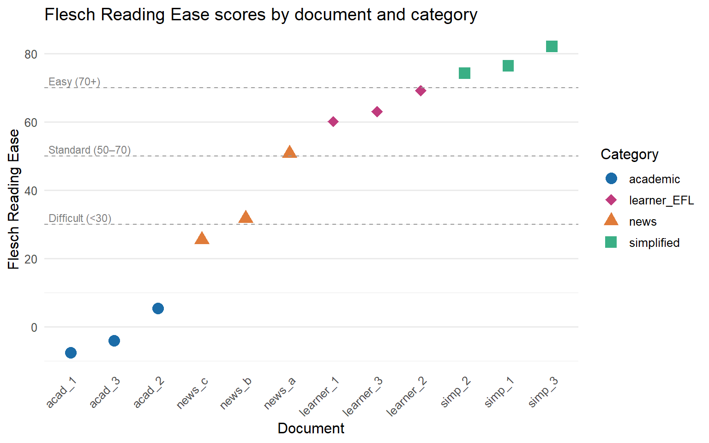
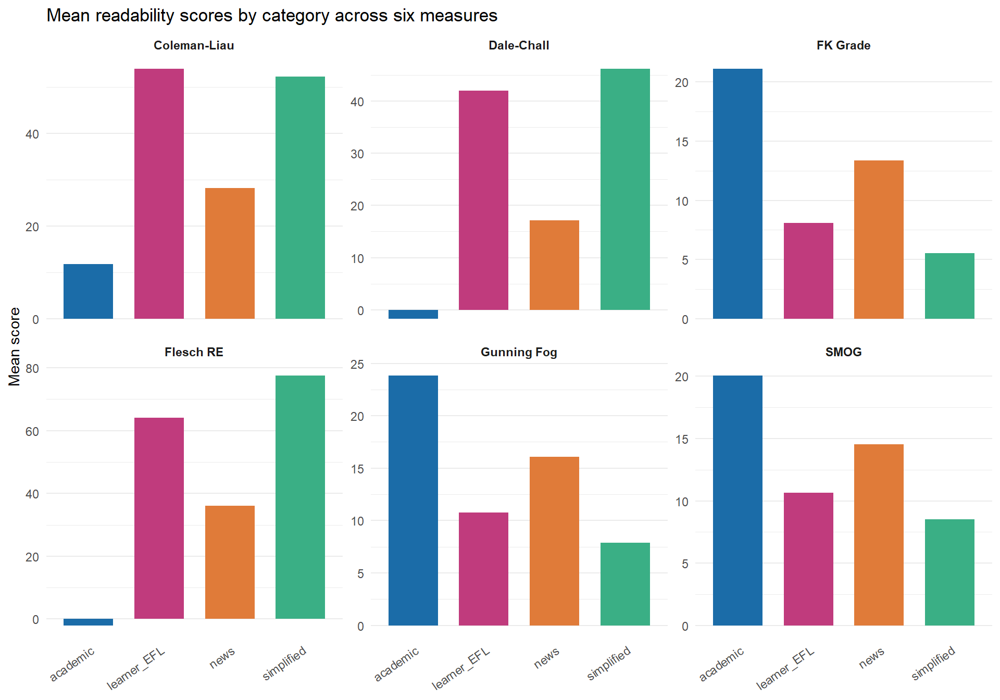

Code
install.packages(c(
"quanteda",
"quanteda.textstats",
"koRpus",
"koRpus.lang.en",
"dplyr",
"tidyr",
"ggplot2",
"flextable",
"checkdown"
))

How difficult is a text to read? This deceptively simple question has occupied linguists, educators, and psychologists for over a century, and it remains relevant today wherever language is produced for a particular audience — from school textbooks and government reports to patient information leaflets and second-language teaching materials. Readability analysis offers a principled, reproducible way to quantify text complexity using measurable surface features of language: how long are the words, how long are the sentences, and how familiar is the vocabulary?
This tutorial introduces the major formula-based readability measures and shows you how to compute them in R. You will work with two complementary packages: quanteda.textstats, which integrates readability computation into the widely used quanteda corpus framework, and koRpus, which provides a more detailed linguistic pre-processing pipeline and a broader range of indices. You will then apply these tools to a practical research question: does readability differ systematically across text genres, and between texts produced by native speakers and learners of English?
By the end of this tutorial you will have a complete, reproducible workflow — from loading raw texts to producing publication-quality tables and figures — that you can adapt for your own research. No prior experience with readability analysis is assumed, but familiarity with basic R and the quanteda ecosystem will help you move through the practical sections more quickly.
By the end of this tutorial, you will be able to:
quanteda.textstatskoRpus package and interpret the detailed output it providesThis tutorial assumes familiarity with:
dplyrquanteda corpus framework (creating a corpus and a document-feature matrix)ggplot2 plottingIf you are new to quanteda, work through the Introduction to Text Analysis tutorial first. If you are new to ggplot2, the Introduction to Data Visualization tutorial will give you the background you need.
Martin Schweinberger. 2026. Readability Analysis in R. The Language Technology and Data Analysis Laboratory (LADAL), The University of Queensland, Australia. url: https://ladal.edu.au/tutorials/readability/readability.html (Version 3.1.1). doi: 10.5281/zenodo.19659678.
The code below installs all packages required for this tutorial. If you have already installed them, you can skip this step.
install.packages(c(
"quanteda",
"quanteda.textstats",
"koRpus",
"koRpus.lang.en",
"dplyr",
"tidyr",
"ggplot2",
"flextable",
"checkdown"
))library(quanteda)
library(quanteda.textstats)
library(koRpus)
library(koRpus.lang.en)
library(dplyr)
library(tidyr)
library(ggplot2)
library(flextable)
library(checkdown)This section introduces the concept of readability, explains what linguistic features formula-based measures draw on, and situates readability analysis within linguistics and applied linguistics research. It also clarifies what readability measures can and cannot tell you.
Readability, in the technical sense used in this tutorial, refers to the ease with which a reader can process the surface form of a written text. It is distinct from comprehensibility (which also depends on the reader’s background knowledge) and from legibility (which refers to the physical presentation of text on the page). Formula-based readability measures — the kind this tutorial focuses on — estimate difficulty from properties that can be counted automatically: word length (measured in syllables or characters), sentence length (measured in words), and sometimes vocabulary difficulty (measured against a reference list of common words).
The earliest readability formulas were developed in the 1940s and 1950s, primarily for educational contexts. Rudolph Flesch’s work on reading ease and grade-level estimation was among the most influential, and several of the formulas still in wide use today are refinements or extensions of his approach (Flesch 1948; Kincaid et al. 1975). The appeal of formula-based measures is straightforward: they are fast, reproducible, and require no human judgement. A researcher with a corpus of thousands of documents can compute readability scores for all of them in seconds, something that would be impossible with expert annotation.
This speed and scalability comes with real limitations, however. Formula-based readability measures are sensitive only to surface features. A text full of short, common words and short sentences will score as easy even if its logical structure is convoluted or its content assumes specialist background knowledge. Conversely, a text with occasional long technical terms may score as difficult even if those terms are immediately explained. The measures therefore work best as a first-pass screening tool, as a variable in a larger analysis, or for comparing large collections of texts where individual quirks average out across many documents (Benjamin 2012).
Within linguistics, readability analysis has found applications in several subfields. In applied linguistics and second language acquisition, readability scores are used to assess whether textbook or test materials are pitched at an appropriate level for learners. In corpus linguistics, they provide a quantitative axis for comparing registers — newspaper prose versus academic writing versus legal documents, for example. In computational linguistics and natural language processing, readability has been studied as a feature of text simplification systems. And in health communication research, readable patient materials have been shown to improve adherence and outcomes, giving readability analysis direct real-world relevance (Paasche-Orlow, Taylor, and Brancati 2003).
Q1. A researcher uses a Flesch-Kincaid Grade Level score to compare the complexity of two sets of news articles. The score for Set A is 12.3 and for Set B is 8.1. Which of the following interpretations is most accurate?
This section introduces and explains the five major readability indices covered in this tutorial: Flesch Reading Ease, Flesch-Kincaid Grade Level, the Gunning Fog Index, the SMOG Index, the Coleman-Liau Index, and the Dale-Chall Readability Formula. For each measure, the underlying formula is explained, the output scale is described, and typical use cases are noted.
The Flesch Reading Ease formula, first published by Rudolph Flesch in 1948, produces a score on a scale from 0 to 100 (Flesch 1948). Higher scores indicate easier texts. The formula is:
\[\text{FRE} = 206.835 - 1.015 \left(\frac{\text{words}}{\text{sentences}}\right) - 84.6 \left(\frac{\text{syllables}}{\text{words}}\right)\]
As a rough guide, scores above 70 are considered easy (plain English suitable for the general public), scores between 50 and 70 are moderately difficult (standard newspaper prose), and scores below 30 are very difficult (academic or legal writing). The formula was originally calibrated on American English texts, and its syllable-counting component can behave unexpectedly with highly technical vocabulary, acronyms, or non-English words. Despite these limitations, it remains one of the most widely cited readability measures in applied research.
The Flesch-Kincaid Grade Level formula, developed for the United States Navy in 1975, recasts the same underlying features into a US school grade level estimate (Kincaid et al. 1975). The formula is:
\[\text{FKGL} = 0.39 \left(\frac{\text{words}}{\text{sentences}}\right) + 11.8 \left(\frac{\text{syllables}}{\text{words}}\right) - 15.59\]
A score of 8 corresponds approximately to eighth-grade reading level (13–14 year olds), a score of 12 to twelfth grade (17–18 year olds), and scores above 16 to university-level text. Like Flesch Reading Ease, it relies exclusively on word length and sentence length. Because the two Flesch measures are derived from the same inputs, they are almost perfectly correlated; using both adds very little information, and researchers typically choose one based on their discipline’s conventions.
The Gunning Fog Index, developed by Robert Gunning in 1952, estimates the years of formal education required to understand a text on first reading (Gunning 1952). Its distinguishing feature is the use of “complex words” — words of three or more syllables — rather than average syllable count:
\[\text{Fog} = 0.4 \left( \frac{\text{words}}{\text{sentences}} + 100 \cdot \frac{\text{complex words}}{\text{words}} \right)\]
A Fog score of 12 corresponds roughly to high-school-level text; scores above 17 are considered unreadable by most adults. The use of a polysyllabic word threshold makes Fog somewhat less sensitive to minor variation in word length than the Flesch family, but it means that a single unusual long word can shift the score noticeably in short texts.
The SMOG (Simple Measure of Gobbledygook) Index was developed by McLaughlin in 1969 as a faster, more robust alternative to Flesch-Kincaid for health and medical texts (McLaughlin 1969). It is based entirely on polysyllabic word counts and is known for being particularly reliable for texts aimed at adult readers:
\[\text{SMOG} = 3 + \sqrt{\text{polysyllabic words in 30 sentences}}\]
In practice, most implementations normalise this to the full text rather than requiring exactly 30 sentences. SMOG is widely used in health communication research because it has been validated against patient comprehension data and tends to be more conservative (giving higher difficulty estimates) than Flesch-Kincaid.
The Coleman-Liau Index, proposed by Meri Coleman and T. L. Liau in 1975, is notable for being based on characters rather than syllables (Coleman and Liau 1975). This makes it faster to compute and more consistent across different implementations, since syllable counting requires either a pronunciation dictionary or a syllabification algorithm, both of which introduce their own variation. The formula is:
\[\text{CLI} = 0.0588 \cdot L - 0.296 \cdot S - 15.8\]
where \(L\) is the average number of letters per 100 words and \(S\) is the average number of sentences per 100 words. Like Flesch-Kincaid, it returns a US grade level estimate.
The Dale-Chall formula, first developed by Edgar Dale and Jeanne Chall in 1948 and revised in 1995, takes a different approach from all the preceding measures: instead of word length as a proxy for difficulty, it measures the proportion of words that are not on a reference list of 3,000 familiar words known to most fourth-grade American students (Chall and Dale 1995). The formula is:
\[\text{DC} = 0.1579 \cdot \left(\frac{\text{unfamiliar words}}{\text{words}} \times 100\right) + 0.0496 \cdot \frac{\text{words}}{\text{sentences}}\]
A correction factor is added when the proportion of unfamiliar words exceeds 5%. Because Dale-Chall uses a vocabulary familiarity list rather than a syllable count, it captures a different dimension of difficulty from the length-based measures, and the two types of measure often give complementary information.
Q2. A health communication researcher wants to assess whether a set of patient information leaflets about diabetes management is written at an appropriate level. The texts contain many technical terms (e.g. “hyperglycaemia”, “glycated haemoglobin”) that appear infrequently in everyday language. Which readability measure is most likely to reflect this vocabulary difficulty?
This section shows you how to compute all five readability measures using the quanteda.textstats package. It covers creating a quanteda corpus, calling textstat_readability(), and presenting the results as a formatted table. The approach here is best suited for large corpora where speed and integration with the rest of the quanteda workflow matter most.
quanteda.textstats::textstat_readability() works directly on a quanteda corpus object. The first step is therefore to create one. In a real project you would load your texts from files, but for demonstration we will create a small corpus of six sample texts representing three registers: an academic abstract, a news article excerpt, and a simplified science summary aimed at the general public. We include two examples of each register so that we can later compare within-register variability.
# Sample texts — two per register
texts <- c(
academic_1 = "The present study investigates the morphosyntactic properties of nominal
ellipsis in English, with particular attention to the constraints governing
the recoverability of elided nominal heads from prior discourse. Building on
previous analyses within the framework of Minimalist syntax, we argue that
nominal ellipsis is licensed by a dedicated functional projection that enters
into an agreement relation with the antecedent nominal. The empirical basis
consists of 1,200 constructed and naturally occurring examples extracted from
the British National Corpus, analysed using a logistic mixed-effects model
with random intercepts for participant and item. Results indicate that
recoverability is modulated by syntactic parallelism and semantic givenness,
providing novel evidence for the interaction of syntactic and discourse
factors in ellipsis licensing.",
academic_2 = "This paper examines the sociolinguistic determinants of code-switching
behaviour in bilingual communities residing in urban centres of post-colonial
West Africa. Drawing on a corpus of naturalistic conversational data collected
over eighteen months of ethnographic fieldwork, we apply variationist analysis
to identify the structural and social factors that condition intra-sentential
switches between the local vernacular and the official national language.
Quantitative modelling using mixed-effects logistic regression reveals that
the strongest predictors of switching are topic domain, the formality of the
interactional setting, and the interlocutor's perceived linguistic repertoire.
These findings are discussed in relation to theories of markedness and the
conversational management of social identity.",
news_1 = "Scientists have discovered a new species of deep-sea fish living more than
three kilometres below the surface of the Pacific Ocean. The fish, which has
been named after the research vessel that found it, is completely blind and
navigates using specialised pressure sensors along its body. The discovery was
made during a six-week expedition to the Mariana Trench and is described in
the journal Nature. Lead researcher Dr Sarah Chen said the finding showed how
little we still know about life in the deep ocean. The team used a remotely
operated submarine to collect samples at depths where sunlight never reaches.",
news_2 = "A new report from the International Energy Agency says renewable energy now
accounts for more than a third of global electricity generation. Solar and wind
power saw the biggest growth last year, with new installations breaking records
in both Europe and Asia. The report warns, however, that the pace of expansion
will need to double if the world is to meet its climate targets by 2050. Energy
ministers from forty countries are meeting in Paris this week to discuss how
to accelerate the transition away from fossil fuels. Critics of the report
argue that its projections underestimate the technical challenges of
integrating large amounts of variable renewable energy into existing grids.",
simplified_1 = "A team of scientists found a new kind of fish deep in the ocean. The fish
lives very far down where it is completely dark. It cannot see at all. Instead
it uses special body parts to feel movement in the water. The fish was found
in a very deep part of the Pacific Ocean called the Mariana Trench. The
scientists used a small robot submarine to go that deep. Finding this fish
is exciting because we still have a lot to learn about life at the bottom
of the sea.",
simplified_2 = "Clean energy like wind and solar power is growing fast all around the world.
Last year, more new wind farms and solar panels were built than ever before.
This is good news for the environment. But a new report says we need to build
even more if we want to slow down climate change. Leaders from many countries
are meeting to talk about how to make this happen more quickly. Some people
think it will be hard to use so much wind and solar power because they do not
always produce energy at the right time."
)
# Create quanteda corpus with document-level metadata
corpus_demo <- corpus(texts)
docvars(corpus_demo, "register") <- c(
"academic", "academic",
"news", "news",
"simplified", "simplified"
)textstat_readability() accepts a character vector or a quanteda corpus object and returns a data frame with one row per document. The measure argument specifies which indices to compute. You can pass a single measure name or a character vector of several. The full list of supported measures is documented in ?textstat_readability.
# Compute all five measures in a single call
readability_results <- textstat_readability(
corpus_demo,
measure = c("Flesch", "Flesch.Kincaid", "FOG", "SMOG", "Coleman.Liau", "Dale.Chall")
)
readability_results document Flesch Flesch.Kincaid FOG SMOG Coleman.Liau.ECP
1 academic_1 -12.299904 22.241432 27.768376 22.711408 10.908637
2 academic_2 -5.436667 20.725185 24.503704 20.503739 7.349376
3 news_1 51.223087 11.232350 13.676893 12.688353 41.870304
4 news_2 34.156054 14.010342 17.168288 15.381576 35.929280
5 simplified_1 80.220220 5.299780 8.276923 8.841846 64.074533
6 simplified_2 78.676250 6.260417 7.650000 7.168622 58.729363
Dale.Chall
1 -9.772244
2 -3.889259
3 25.805417
4 18.727045
5 44.590440
6 44.053750The raw data frame output is useful for downstream analysis, but for presenting results in a report or paper you will want a formatted table. The code below rounds scores to two decimal places, renames the columns to be more reader-friendly, and passes the result to flextable for display.
readability_results |>
mutate(
register = docvars(corpus_demo, "register")
) |>
rename(
Document = document,
Register = register,
`Flesch RE` = Flesch,
`FK Grade` = Flesch.Kincaid,
`Gunning Fog` = FOG,
SMOG = SMOG,
`Coleman-Liau` = Coleman.Liau.ECP,
`Dale-Chall` = Dale.Chall
) |>
mutate(across(where(is.numeric), \(x) round(x, 2))) |>
as.data.frame() |>
flextable::flextable() |>
flextable::set_table_properties(width = .95, layout = "autofit") |>
flextable::theme_zebra() |>
flextable::fontsize(size = 12) |>
flextable::fontsize(size = 12, part = "header") |>
flextable::align_text_col(align = "center") |>
flextable::set_caption(caption = "Readability scores for six sample texts across three registers") |>
flextable::border_outer()Document | Flesch RE | FK Grade | Gunning Fog | SMOG | Coleman-Liau | Dale-Chall | Register |
|---|---|---|---|---|---|---|---|
academic_1 | -12.30 | 22.24 | 27.77 | 22.71 | 10.91 | -9.77 | academic |
academic_2 | -5.44 | 20.73 | 24.50 | 20.50 | 7.35 | -3.89 | academic |
news_1 | 51.22 | 11.23 | 13.68 | 12.69 | 41.87 | 25.81 | news |
news_2 | 34.16 | 14.01 | 17.17 | 15.38 | 35.93 | 18.73 | news |
simplified_1 | 80.22 | 5.30 | 8.28 | 8.84 | 64.07 | 44.59 | simplified |
simplified_2 | 78.68 | 6.26 | 7.65 | 7.17 | 58.73 | 44.05 | simplified |
Even from this small example, you can see the expected pattern: academic texts score lowest on Flesch Reading Ease (hardest) and highest on grade-level measures, while simplified texts score highest on Flesch RE and lowest on grade-level measures. News articles fall in between. Notice also that the different measures do not always rank texts identically — this reflects the fact that they capture overlapping but not identical dimensions of surface complexity.
Q3. You run textstat_readability() on a corpus and notice that one document has a Flesch Reading Ease score of 22 and a Flesch-Kincaid Grade Level score of 17. What does this combination of scores most likely indicate?
This section introduces the koRpus package as a complement to quanteda.textstats. koRpus performs tokenisation and syllabification as a pre-processing step, giving you more granular control over how texts are analysed and access to a broader set of readability indices. It is particularly well suited when you need syllable-level detail or want to compute measures for individual texts interactively.
quanteda.textstats is fast and integrates seamlessly with the rest of the quanteda workflow, making it the natural first choice for large-scale corpus work. koRpus, developed by Meik Michalke (Michalke 2021), offers a different set of trade-offs. Its core strength is the tokenize() function, which segments text into words, assigns part-of-speech tags (via the TreeTagger external tool, if installed), and counts syllables using a built-in hyphenation algorithm. This means the syllable counts passed to the readability formulas are derived from actual linguistic analysis of each word rather than a simple algorithm, which can improve accuracy for unusual or technical vocabulary.
koRpus also implements a wider range of indices than quanteda.textstats, including several that are less commonly available in other R packages, such as the Linsear Write Formula, Bormuth’s Cloze Mean, and the Spache Readability Formula for children’s texts. For most research purposes, quanteda.textstats will suffice, but if you need a specific less common index, or if you want to inspect the syllabification of individual words, koRpus is the tool to reach for.
The central workflow in koRpus involves two steps. First, you tokenise the text with koRpus::tokenize(), which returns a tagged object containing every token along with its syllable count, character count, and (if TreeTagger is installed) its part-of-speech tag. Second, you pass that object to koRpus::readability() to compute one or more indices.
For the example below, we use the news article excerpt from our earlier corpus. koRpus::tokenize() requires only the text and a language code; it uses its built-in hyphenation-based syllabifier automatically, with no external tools needed for readability analysis.
# Extract one text as a character string
news_text <- as.character(corpus_demo["news_1"])
# koRpus::tokenize() requires a file path, not a string — write to temp file first
tmp <- tempfile(fileext = ".txt")
writeLines(news_text, tmp)
# Tokenise from file
news_tokenised <- koRpus::tokenize(
tmp,
lang = "en"
)
# Inspect the first few tokens
head(koRpus::taggedText(news_tokenised), 10) doc_id token tag lemma lttr wclass desc stop stem
1 file2f94551c767e.txt Scientists word.kRp 10 word NA NA NA
2 file2f94551c767e.txt have word.kRp 4 word NA NA NA
3 file2f94551c767e.txt discovered word.kRp 10 word NA NA NA
4 file2f94551c767e.txt a word.kRp 1 word NA NA NA
5 file2f94551c767e.txt new word.kRp 3 word NA NA NA
6 file2f94551c767e.txt species word.kRp 7 word NA NA NA
7 file2f94551c767e.txt of word.kRp 2 word NA NA NA
8 file2f94551c767e.txt deep-sea unk.kRp 8 unknown NA NA NA
9 file2f94551c767e.txt fish word.kRp 4 word NA NA NA
10 file2f94551c767e.txt living word.kRp 6 word NA NA NA
idx sntc
1 1 1
2 2 1
3 3 1
4 4 1
5 5 1
6 6 1
7 7 1
8 8 1
9 9 1
10 10 1# Compute readability measures — Dale.Chall excluded as it requires
# an external word list not available in all koRpus installations
news_readability <- koRpus::readability(
news_tokenised,
index = c("Flesch", "Flesch.Kincaid", "FOG", "SMOG", "Coleman.Liau")
)
summary(news_readability)The koRpus::readability() function returns a complex S4 object. To extract the numeric scores for comparison or plotting, use the slot() function or the dedicated accessor functions. The code below extracts the main index values into a tidy data frame.
# Extract scores directly from named slots
news_scores <- data.frame(
text = "news_1",
Flesch_RE = slot(news_readability, "Flesch")$RE,
FK_Grade = slot(news_readability, "Flesch.Kincaid")$grade,
Fog = slot(news_readability, "FOG")$FOG,
SMOG = slot(news_readability, "SMOG")$grade,
Coleman_Liau = slot(news_readability, "Coleman.Liau")$grade
)
news_scores |>
mutate(across(where(is.numeric), \(x) round(x, 2))) |>
as.data.frame() |>
flextable::flextable() |>
flextable::set_table_properties(width = .95, layout = "autofit") |>
flextable::theme_zebra() |>
flextable::fontsize(size = 12) |>
flextable::fontsize(size = 12, part = "header") |>
flextable::align_text_col(align = "center") |>
flextable::set_caption(caption = "Readability scores for the news_1 text computed with koRpus") |>
flextable::border_outer()text | Flesch_RE | FK_Grade | Fog | SMOG | Coleman_Liau |
|---|---|---|---|---|---|
news_1 | 55.66 | 10.51 | 13.62 | 12.69 | 12.13 |
Full part-of-speech tagging in koRpus requires TreeTagger, a separate, freely available external tool that must be downloaded and installed independently of R. When TreeTagger is not available, koRpus::tokenize() still runs correctly using its built-in hyphenation-based syllabifier, which is all that is needed for the readability measures covered in this tutorial. None of the five indices (Flesch, FK, Fog, SMOG, Coleman-Liau, Dale-Chall) require POS tags — they rely only on token counts, syllable counts, and character counts. Instructions for installing TreeTagger if you need POS tagging for other purposes are available in the koRpus package documentation (vignette("koRpus", package = "koRpus")).
This section presents a complete, end-to-end readability analysis using a dataset of texts drawn from four categories: academic writing, newspaper prose, simplified popular science writing, and English as a Foreign Language (EFL) learner essays. The analysis demonstrates how to compute and compare readability scores across both registers and proficiency levels, and how to visualise the results.
For this worked example, we construct a dataset of fifteen texts divided across four categories. Three categories are native-speaker texts representing different registers (academic, news, simplified), and one category contains learner essays at intermediate English proficiency level drawn from the style of writing typical of international students. In a real research project you would use an established learner corpus such as ICLE (International Corpus of Learner English) or EFCAMDAT; here we use constructed examples that replicate the characteristic features of learner writing at the B2/upper-intermediate level.
The characteristic features of B2 learner writing that affect readability include shorter sentences (because learners tend to avoid complex embedding), a preference for high-frequency, monosyllabic vocabulary (which lowers grade-level scores), but also occasional very long multi-clause sentences produced by stringing clauses together with coordinators, and recurring formulaic phrases. These features interact in ways that can produce unexpectedly low or high readability scores, making learner writing an interesting test case for readability measures.
# Extended corpus with four categories, three texts each (twelve total)
extended_texts <- c(
# --- Academic ---
acad_1 = "The morphological structure of words in agglutinative languages presents
significant challenges for computational parsing models trained primarily on
analytic languages such as English. In this study we evaluate three neural
sequence-labelling architectures on a newly annotated corpus of Swahili
and Turkish morphological data, comparing character-level convolutional
networks, bidirectional LSTMs, and transformer-based encoders. Results
demonstrate that transformer architectures achieve the highest F1 scores
across both languages, but that their advantage over LSTMs is substantially
reduced when training data are limited to fewer than 5,000 annotated tokens.",
acad_2 = "Discourse coherence in second language writing has been investigated
primarily through the lens of cohesive devices, but relatively little
attention has been paid to the role of topic continuity in establishing
local coherence across adjacent sentences. The present study examines topic
chains in argumentative essays produced by advanced learners of English
and compares them to essays produced by native speakers of comparable
educational background. Using an annotation scheme derived from Givon's
topic continuity framework, we show that learner essays exhibit shorter
and more frequently interrupted topic chains, even when surface measures
of cohesion such as connective frequency are controlled for.",
acad_3 = "The relationship between phonological working memory capacity and vocabulary
acquisition in young children has been extensively documented in the
first language acquisition literature, but its role in second language
vocabulary learning among adult learners remains less well understood.
This study reports on a longitudinal experiment tracking 124 adult learners
of Mandarin Chinese over a twelve-week instructional period. Phonological
working memory was assessed at baseline using a non-word repetition task,
and vocabulary knowledge was measured at three-week intervals using a
battery of receptive and productive vocabulary tests. Mixed-effects growth
curve models revealed a significant interaction between working memory
capacity and rate of vocabulary growth, consistent with resource-limited
models of lexical acquisition.",
# --- News ---
news_a = "Scientists at the European Space Agency have confirmed that a spacecraft
launched three years ago has entered orbit around Jupiter's moon Europa.
The probe will spend the next two years mapping the moon's icy surface
and searching for signs of liquid water beneath. Europa is considered one
of the most promising places in the solar system to look for microbial life.
The mission cost over four billion euros and involved research teams from
twelve countries. Mission controllers in Darmstadt celebrated as the
confirmation signal arrived, delayed by forty-three minutes due to the
distance from Earth.",
news_b = "The government has announced a new package of measures aimed at reducing
waiting times in public hospitals. Under the plan, which will cost an estimated
three billion dollars over four years, funding will be directed towards hiring
additional nursing staff and expanding outpatient capacity in regional areas.
Health advocates welcomed the announcement but said the measures did not go
far enough to address chronic understaffing in emergency departments. The
opposition called the package inadequate and accused the government of
delaying action until an election year. Detailed implementation guidelines
are expected to be released next month.",
news_c = "A study published this week in the journal Science has found that global
average sea surface temperatures reached a record high last year, exceeding
any previously recorded value in the 170-year instrumental record. The authors
attribute the increase to a combination of long-term human-caused warming and
a strong El Nino event. Marine biologists have warned that sustained elevated
temperatures will accelerate coral bleaching events worldwide. The findings
will be presented to policymakers at an international climate summit in
Nairobi next month, where negotiators are discussing updates to national
emissions reduction targets.",
# --- Simplified ---
simp_1 = "Astronauts on the International Space Station sometimes have trouble
sleeping. This is because in space, the sun rises and sets sixteen times
a day. That makes it hard for the body to know when it is night. Scientists
have been studying this problem to try to help. One idea is to use special
lights inside the station that change colour through the day, just like
sunlight does on Earth. Early tests show this might help astronauts sleep
better and feel less tired.",
simp_2 = "Sharks have been in the ocean for a very long time, much longer than
dinosaurs. There are more than five hundred different kinds of shark. Most
sharks do not want to hurt people. They are more interested in eating fish
and squid. Sharks are very important for keeping the ocean healthy. When
there are fewer sharks, other animals can grow too numerous and cause problems
for the whole ocean. Scientists are working hard to protect sharks because
many kinds are becoming rare.",
simp_3 = "Your brain uses sleep to clean itself. During the night, while you are
asleep, special cells in your brain remove waste that builds up through the day.
If you do not sleep enough, this cleaning does not happen properly. Over time,
this can cause problems with memory and thinking. That is why getting enough
sleep is so important. Most adults need between seven and nine hours of sleep
each night. Going to bed at the same time every night can help your brain
work better.",
# --- EFL Learner Essays (B2 level) ---
learner_1 = "In my opinion, the most important invention of the modern time is the
internet. The internet change completely how people communicate and find
information. Before the internet, if you want to know something you must go
to library and search in many books. Now you can find everything in some
seconds. Also, the internet make possible to talk with people in other countries
very easily. My grandmother cannot use the internet but I think if she learn
it she will be very happy because she can speak with my cousins in Germany.
The internet also have some problems like false information and people who
want to steal money, so we must be careful. But I think overall it is very
good for the society.",
learner_2 = "The problem of climate change is very serious and all governments must
take action now. Many scientists say that temperature of the Earth is going
up because of gases that factories and cars produce. I agree that this is
a big danger. In my country there are more floods than before and also the
summer is more hotter every year. Some politicians say that changing our
economy will cost too much money but I think they are wrong. If we do not
act now the cost will be much more bigger in the future. Also, many new
jobs can be create in clean energy sector so it is not only a problem but
also a chance. Every person can also help by use less electricity and not
waste food.",
learner_3 = "University education should be free for all students. When education cost
a lot of money, only rich people can study and this is not fair. Many students
from poor family have to work during their studies and they cannot concentrate
fully on their courses. This make results worse. In countries like Germany
and Norway, university is free or very cheap and these countries have high
level of education. Some people say free university cost too much for the
government but I think it is an invest in the future. When more people have
degree, they get better jobs and pay more taxes. So the government will get
back the money. I believe every person who work hard deserve the chance to
study without worry about money."
)
# Build corpus with metadata
extended_corpus <- corpus(extended_texts)
docvars(extended_corpus, "category") <- rep(
c("academic", "news", "simplified", "learner_EFL"),
each = 3
)
# Compute readability for all documents
extended_readability <- textstat_readability(
extended_corpus,
measure = c("Flesch", "Flesch.Kincaid", "FOG", "SMOG", "Coleman.Liau", "Dale.Chall")
)
# Add category variable
extended_readability <- extended_readability |>
mutate(category = docvars(extended_corpus, "category"))With document-level scores in hand, the natural next step is to aggregate by category and examine the means and ranges for each measure. The code below uses dplyr to compute group means and standard deviations, then displays the summary as a formatted table.
# Compute group-level summaries
readability_summary <- extended_readability |>
group_by(category) |>
summarise(
`Flesch RE mean` = round(mean(Flesch, na.rm = TRUE), 1),
`Flesch RE sd` = round(sd(Flesch, na.rm = TRUE), 1),
`FK Grade mean` = round(mean(Flesch.Kincaid, na.rm = TRUE), 1),
`FK Grade sd` = round(sd(Flesch.Kincaid, na.rm = TRUE), 1),
`Fog mean` = round(mean(FOG, na.rm = TRUE), 1),
`Fog sd` = round(sd(FOG, na.rm = TRUE), 1),
`SMOG mean` = round(mean(SMOG, na.rm = TRUE), 1),
`Coleman-Liau mean` = round(mean(Coleman.Liau.ECP, na.rm = TRUE), 1),
`Dale-Chall mean` = round(mean(Dale.Chall, na.rm = TRUE), 1),
.groups = "drop"
) |>
rename(Category = category)
readability_summary |>
as.data.frame() |>
flextable::flextable() |>
flextable::set_table_properties(width = .95, layout = "autofit") |>
flextable::theme_zebra() |>
flextable::fontsize(size = 11) |>
flextable::fontsize(size = 11, part = "header") |>
flextable::align_text_col(align = "center") |>
flextable::set_caption(
caption = "Mean readability scores by text category (academic, news, simplified, EFL learner)"
) |>
flextable::border_outer()Category | Flesch RE mean | Flesch RE sd | FK Grade mean | FK Grade sd | Fog mean | Fog sd | SMOG mean | Coleman-Liau mean | Dale-Chall mean |
|---|---|---|---|---|---|---|---|---|---|
academic | -2.0 | 6.7 | 21.1 | 0.4 | 23.8 | 1.0 | 20.1 | 11.8 | -1.7 |
learner_EFL | 64.1 | 4.6 | 8.1 | 0.6 | 10.7 | 1.9 | 10.6 | 54.0 | 42.0 |
news | 36.0 | 13.2 | 13.4 | 2.3 | 16.1 | 3.0 | 14.5 | 28.2 | 17.1 |
simplified | 77.6 | 4.0 | 5.5 | 0.6 | 7.9 | 1.0 | 8.5 | 52.3 | 46.2 |
The learner essay scores are worth examining carefully, because they can appear counterintuitive at first glance. Learner essays at the B2 level often score as relatively easy on Flesch Reading Ease and relatively low on Flesch-Kincaid Grade Level, despite being produced by university students writing on complex topics. This pattern arises because B2 learners tend to use shorter, more frequent vocabulary items and shorter sentences than native-speaker academic writers, even when the topic is similar. The surface simplicity of learner language does not reflect conceptual simplicity — it reflects the learner’s constrained productive vocabulary and tendency to avoid syntactic risk.
Dale-Chall scores for learner texts may tell a different story, however. Because learners sometimes reach for uncommon words in an attempt to demonstrate range — and because they may produce non-standard word forms that do not appear on the familiarity reference list — the Dale-Chall formula can sometimes flag learner texts as harder than their Flesch scores suggest. Comparing multiple indices side-by-side, as done here, is therefore more informative than relying on a single measure.
Q4. A researcher computes Flesch Reading Ease scores for a set of B2 learner essays and a set of native-speaker news articles on the same topics. The learner essays score higher on Flesch RE (i.e. appear “easier”) than the news articles. Which explanation is most consistent with how Flesch RE works?
This section demonstrates how to visualise readability scores using ggplot2. It covers a dot plot for comparing individual document scores, a grouped bar chart for comparing category means, and a faceted plot for examining how different indices rank the same set of texts.
A dot plot is an effective choice for a small corpus because it shows both the individual data points and their spread within each category. The plot below shows Flesch Reading Ease scores for all twelve documents, coloured by category.
ggplot(extended_readability,
aes(x = reorder(document, Flesch),
y = Flesch,
colour = category,
shape = category)) +
geom_point(size = 4) +
geom_hline(yintercept = c(30, 50, 70),
linetype = "dashed", colour = "grey60", linewidth = 0.4) +
annotate("text", x = 0.5, y = 72, label = "Easy (70+)", hjust = 0,
size = 3, colour = "grey50") +
annotate("text", x = 0.5, y = 52, label = "Standard (50–70)", hjust = 0,
size = 3, colour = "grey50") +
annotate("text", x = 0.5, y = 32, label = "Difficult (<30)", hjust = 0,
size = 3, colour = "grey50") +
scale_colour_manual(
values = c(academic = "#1b6ca8",
news = "#e07b39",
simplified = "#3aaf85",
learner_EFL = "#c03b7d"),
name = "Category"
) +
scale_shape_manual(
values = c(academic = 16,
news = 17,
simplified = 15,
learner_EFL = 18),
name = "Category"
) +
labs(
title = "Flesch Reading Ease scores by document and category",
x = "Document",
y = "Flesch Reading Ease"
) +
theme_minimal(base_size = 12) +
theme(
axis.text.x = element_text(angle = 45, hjust = 1),
panel.grid.major.x = element_blank()
)
One of the most informative visualisations for readability analysis is a faceted plot that shows all measures side by side for the same set of documents. This makes it immediately visible when measures agree and when they diverge. The code below reshapes the data to long format using tidyr::pivot_longer() and then facets by measure.
readability_long <- extended_readability |>
pivot_longer(
cols = c(Flesch, Flesch.Kincaid, FOG, SMOG, Coleman.Liau.ECP, Dale.Chall),
names_to = "measure",
values_to = "score"
) |>
mutate(
measure = recode(measure,
Flesch = "Flesch RE",
Flesch.Kincaid = "FK Grade",
FOG = "Gunning Fog",
SMOG = "SMOG",
Coleman.Liau.ECP = "Coleman-Liau",
Dale.Chall = "Dale-Chall"
)
)
readability_means <- readability_long |>
group_by(category, measure) |>
summarise(mean_score = mean(score, na.rm = TRUE), .groups = "drop")
ggplot(readability_means,
aes(x = category, y = mean_score, fill = category)) +
geom_col(width = 0.7) +
facet_wrap(~ measure, scales = "free_y", ncol = 3) +
scale_fill_manual(
values = c(academic = "#1b6ca8",
news = "#e07b39",
simplified = "#3aaf85",
learner_EFL = "#c03b7d"),
name = "Category"
) +
labs(
title = "Mean readability scores by category across six measures",
x = NULL,
y = "Mean score"
) +
theme_minimal(base_size = 11) +
theme(
axis.text.x = element_text(angle = 35, hjust = 1),
strip.text = element_text(face = "bold"),
panel.grid.major.x = element_blank(),
legend.position = "none"
)
The faceted plot reveals an important pattern: while all six measures agree on the broad ordering (academic texts hardest, simplified texts easiest), the absolute scores and the relative positions of news and learner texts vary noticeably across measures. This is precisely why comparing multiple measures, rather than relying on a single index, gives a more complete picture of text complexity.
Q5. When you plot mean readability scores for the four text categories across all six measures in a faceted chart, you notice that learner essays score close to simplified texts on Flesch RE and FK Grade but close to news articles on Dale-Chall. What does this suggest about the nature of learner writing complexity?
This section discusses the most important limitations of formula-based readability measures and offers practical guidance on how to apply them responsibly. Understanding what these measures cannot do is as important as knowing how to compute them.
Formula-based readability measures have a long list of acknowledged limitations, and being aware of them is essential for interpreting results responsibly. The most fundamental limitation is that they are sensitive only to surface features. Sentence length and word length are imperfect proxies for the true sources of reading difficulty, which include syntactic complexity, coherence, the density of new concepts, the degree of presupposed background knowledge, and the quality of the text’s organisation. A bureaucratic document written entirely in short sentences and common words can be profoundly difficult to understand; a well-structured academic text with technical vocabulary can be surprisingly accessible to an informed reader.
A related limitation is that all of the major formulas were calibrated on American English texts, and most were validated on relatively narrow text types (school textbooks, naval training manuals, health information leaflets). Their performance when applied to other varieties of English, other registers, or other languages is not well established. The syllabification algorithms used by most R implementations of these formulas are also designed for English and can produce unreliable syllable counts for loanwords, proper nouns, acronyms, and numerals.
Text length is another important practical concern. Readability scores become less stable as texts get shorter, because a single long sentence or a single unusual word has a much larger effect on the computed average when the text contains only five or six sentences. Most published guidelines recommend a minimum of 100 words, and several authors suggest that 300 words or more is preferable for stable estimates. If your corpus contains many very short texts (social media posts, individual paragraphs, short utterances), readability scores should be interpreted with particular caution.
Because each formula captures a slightly different combination of surface features, and because the available implementations use somewhat different syllabification algorithms, no single measure should be taken as a definitive assessment of text difficulty. The standard recommendation in the research literature is to compute several indices and report their convergent pattern rather than relying on one number. When measures agree — when all five indices rank a set of texts in roughly the same order — that convergence provides stronger evidence of a genuine difficulty difference than any single measure alone. When measures diverge — as Dale-Chall sometimes does relative to the length-based measures — that divergence is itself informative about which dimension of complexity is driving the difference.
It is worth emphasising, especially in a linguistics research context, that readability scores are properties of texts, not properties of readers. Two readers with different background knowledge, reading goals, and linguistic proficiency will experience the same text very differently, and no formula can capture that variability. When making claims based on readability analysis, researchers should be careful to frame their conclusions in terms of text-level surface features rather than making strong claims about reader experience. Statements like “academic texts have significantly higher Flesch-Kincaid Grade Level scores than simplified texts in this corpus” are empirically defensible; statements like “academic texts are harder for readers to understand” go beyond what the data directly support.
Compute at least two or three indices and report their convergence or divergence. Report the text length of your documents alongside the readability scores — very short texts produce unreliable estimates. Do not use readability scores as a sole criterion for assessing suitability of a text for a given audience, as they cannot capture conceptual difficulty, coherence, or background knowledge requirements. When comparing corpora from different languages or language varieties, note that formulas calibrated on American English may not transfer cleanly. Always contextualise your readability scores with qualitative description of the texts.
Q6. A researcher reports that a corpus of government policy documents has a mean Flesch-Kincaid Grade Level of 16.8. They conclude that “these documents are too difficult for the average citizen to understand.” What is the most important limitation of this conclusion?
Martin Schweinberger. 2026. Readability Analysis in R. The Language Technology and Data Analysis Laboratory (LADAL), The University of Queensland, Australia. url: https://ladal.edu.au/tutorials/readability/readability.html (Version 3.1.1). doi: 10.5281/zenodo.19659678.
@manual{martinschweinberger2026readability,
author = {Martin Schweinberger},
title = {Readability Analysis in R},
year = {2026},
note = {https://ladal.edu.au/tutorials/readability/readability.html},
organization = {The Language Technology and Data Analysis Laboratory (LADAL), The University of Queensland, Australia},
edition = {3.1.1},
doi = {10.5281/zenodo.19659678}
}sessionInfo()R version 4.4.2 (2024-10-31 ucrt)
Platform: x86_64-w64-mingw32/x64
Running under: Windows 11 x64 (build 26200)
Matrix products: default
locale:
[1] LC_COLLATE=English_United States.utf8
[2] LC_CTYPE=English_United States.utf8
[3] LC_MONETARY=English_United States.utf8
[4] LC_NUMERIC=C
[5] LC_TIME=English_United States.utf8
time zone: Australia/Brisbane
tzcode source: internal
attached base packages:
[1] stats graphics grDevices datasets utils methods base
other attached packages:
[1] checkdown_0.0.13 flextable_0.9.11
[3] ggplot2_4.0.2 tidyr_1.3.2
[5] dplyr_1.2.0 koRpus.lang.en_0.1-4
[7] koRpus_0.13-8 sylly_0.1-6
[9] quanteda.textstats_0.97.2 quanteda_4.2.0
loaded via a namespace (and not attached):
[1] fastmatch_1.1-8 gtable_0.3.6 xfun_0.56
[4] htmlwidgets_1.6.4 lattice_0.22-6 vctrs_0.7.2
[7] tools_4.4.2 generics_0.1.4 tibble_3.3.1
[10] sylly.en_0.1-3 pkgconfig_2.0.3 Matrix_1.7-2
[13] data.table_1.17.0 RColorBrewer_1.1-3 S7_0.2.1
[16] uuid_1.2-1 lifecycle_1.0.5 compiler_4.4.2
[19] farver_2.1.2 textshaping_1.0.0 codetools_0.2-20
[22] litedown_0.9 fontquiver_0.2.1 fontLiberation_0.1.0
[25] htmltools_0.5.9 yaml_2.3.10 pillar_1.11.1
[28] openssl_2.3.2 fontBitstreamVera_0.1.1 commonmark_2.0.0
[31] stopwords_2.3 tidyselect_1.2.1 zip_2.3.2
[34] digest_0.6.39 stringi_1.8.7 purrr_1.2.1
[37] labeling_0.4.3 fastmap_1.2.0 grid_4.4.2
[40] cli_3.6.5 magrittr_2.0.4 patchwork_1.3.0
[43] withr_3.0.2 gdtools_0.5.0 scales_1.4.0
[46] rmarkdown_2.30 officer_0.7.3 askpass_1.2.1
[49] ragg_1.5.1 evaluate_1.0.5 knitr_1.51
[52] markdown_2.0 rlang_1.1.7 Rcpp_1.1.1
[55] nsyllable_1.0.1 glue_1.8.0 BiocManager_1.30.27
[58] xml2_1.3.6 renv_1.1.7 rstudioapi_0.17.1
[61] jsonlite_2.0.0 R6_2.6.1 systemfonts_1.3.1 This tutorial was re-developed with the assistance of Claude (claude.ai), a large language model created by Anthropic. Claude was used to help revise the tutorial text, structure the instructional content, generate the R code examples, and write the checkdown quiz questions and feedback strings. All content was reviewed, edited, and approved by the author (Martin Schweinberger), who takes full responsibility for the accuracy and pedagogical appropriateness of the material. The use of AI assistance is disclosed here in the interest of transparency and in accordance with emerging best practices for AI-assisted academic content creation.